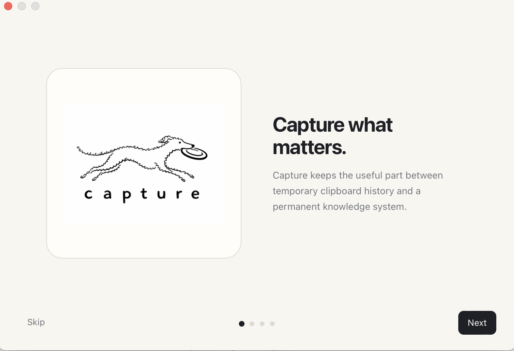
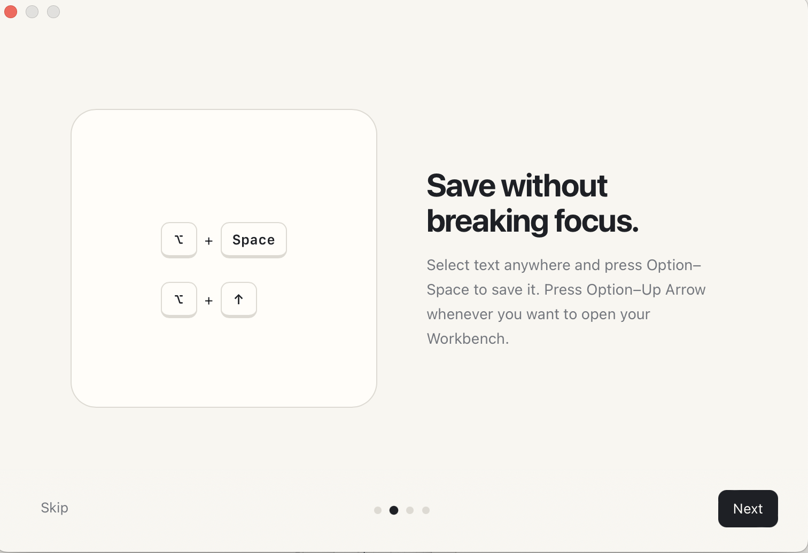
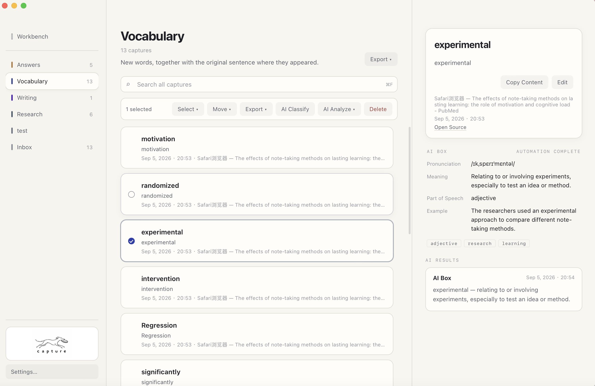
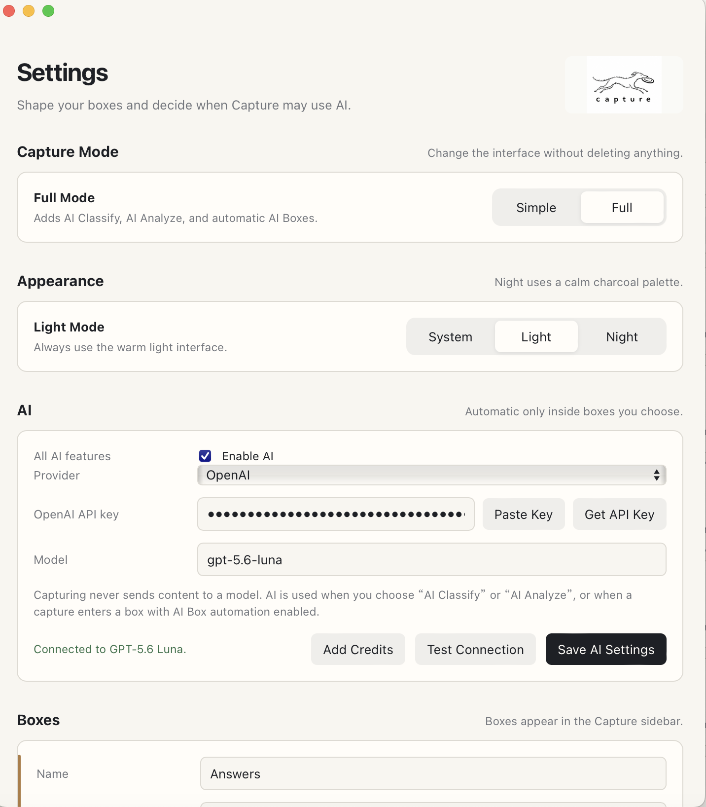
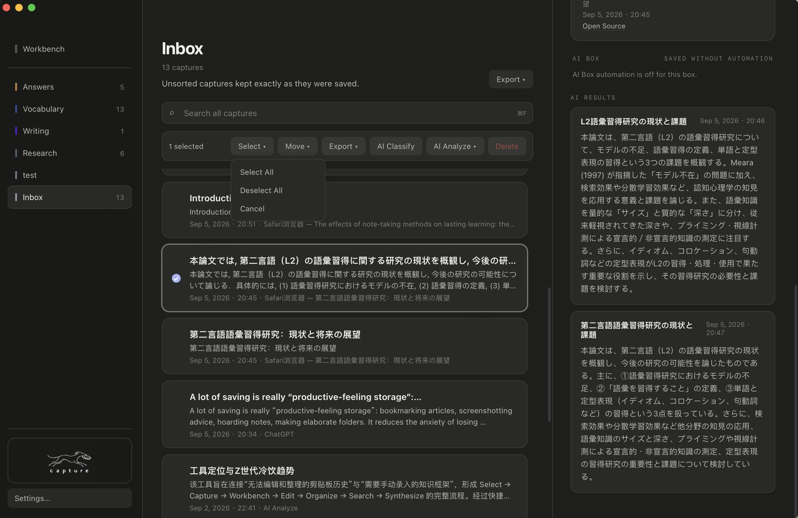
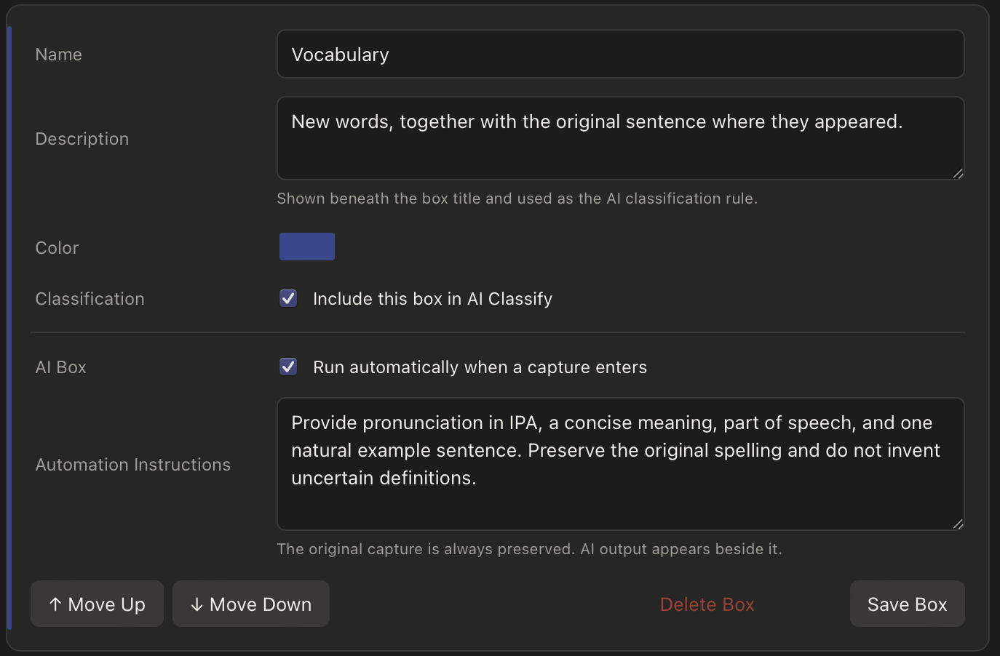
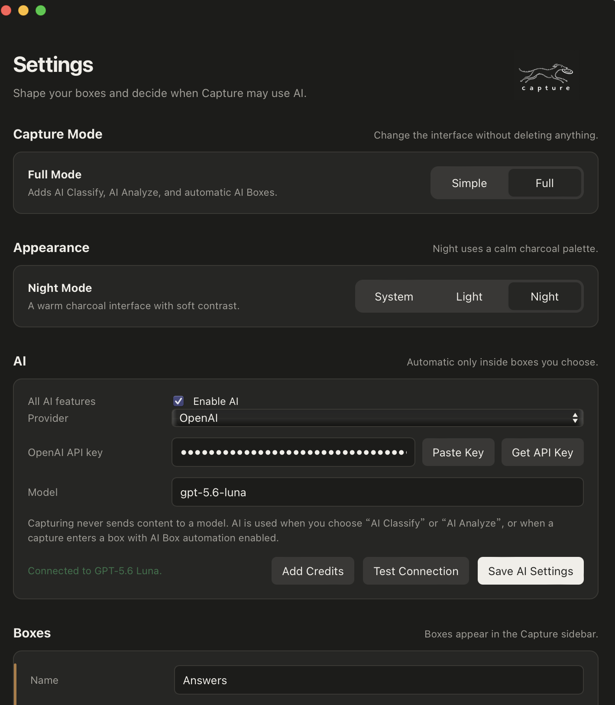
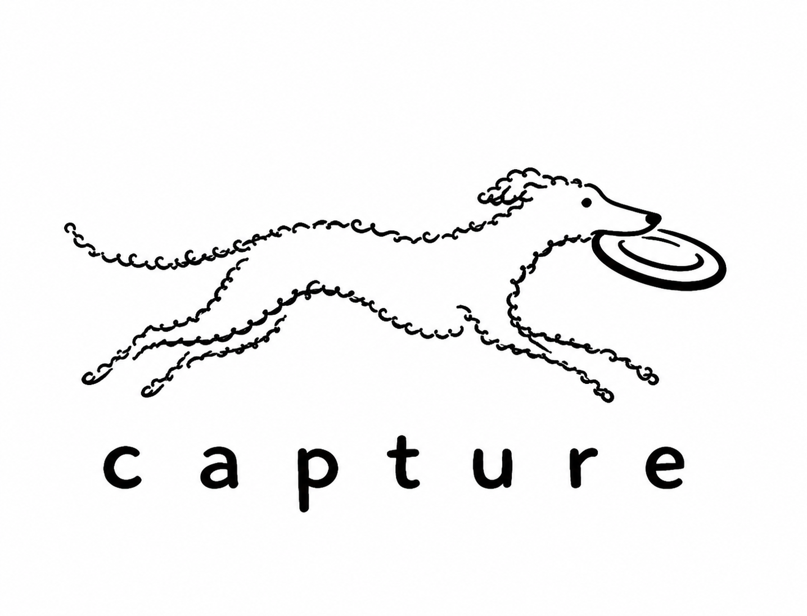

長い回答の一部だけが大切
保存したいのは数行だけということがあります。

重要な部分を選ぶ
ショートカットで保存
Boxで整理する
必要な時だけAI
AIの会話から流れていく大切な断片を、文脈ごとつかまえる。
Captureは、散らばる情報をすばやく拾い、整理するAIツールです。重要な箇所と一緒に、質問、出典、時刻、リンクまで残します。
実際に動作するCaptureで、断片の保存からAIによる整理、文書の書き出しまでを紹介します。
実機操作を収録 · 日本語ナレーション付き
AIの回答に残したい内容があっても、別のノートを作り、ページごとに書き写す作業は時間がかかり、いま考えていることを中断させます。
保存したいのは数行だけということがあります。
文章だけをコピーすると、何への答えだったのかを忘れます。
その場でノートや分類先を決めることが、調査や対話の流れを切ります。
まず文脈ごと保存し、整理はあとから。Captureは保存先をその場で決めさせません。
考え続けたまま、大切なものだけをつかまえる。それがCaptureです。
原文は必ず残り、AIはユーザーが選んだとき、または設定したBoxの中だけで働きます。
必要な一節
一度のショートカット
質問・出典・時刻・URL
まず手元に置く
目的別に整理
抽出・要約・統合
一つの文書へ
保存、編集、Box整理、AI分類・分析、複数断片の統合、文書への書き出しまで動作します。

質問、ページ名、リンク、アプリ、時刻を添えます。
タイトルと本文を修正し、目的別のBoxへ移動します。
分類、重点抽出、アウトライン作成を実行します。
異なる会話の断片をまとめ、Wordなどで出力します。


走りながらフリスビーを受け取る犬を、スピード、親しみやすさ、そして大切なものを逃さない動作の象徴にしました。
真实使用中的反馈，持续帮助我确认 Capture 应该解决什么问题。
我现在高频度地使用 Capture，尤其在 AI 对话、平日查找资料和 AI Coding 中。持续使用 Capture 获取并整理有用的信息，它已经成了我很重要的生产力工具。
朋友认为，快速保存片段和导出多条内容，确实减少了整理时间。